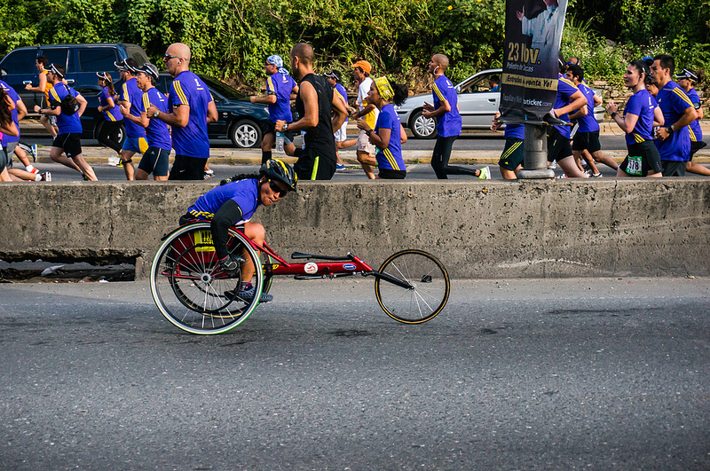

Values
August 2nd, 2015
In selecting a value, the one that resonates the most with me is accomplishment. I hate to pick the first one on the list, but it really defines me. For me, I feel accomplishment encompasses more than being successful. I gain a sense of purpose when I create something useful. I become pride in the work I just made. My project becomes linked to who I am.
The last topic I was asked for advice was ironically coding syntax. I felt glad to help out and proud that the person thought I was knowledgable enough to know the answer.
In terms of using my value as a strength, I can leverage my mind to always stay positive. In tough times at DBC in a couple weeks, I just need to remind myself the end goal - to create awesome projects that I can be proud of and eventually land a job creating even more cool projects.